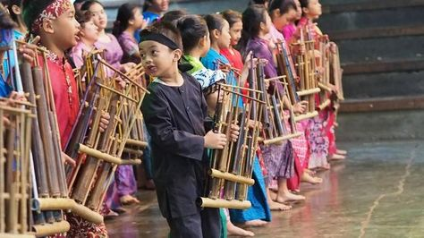
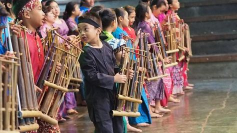

Suku Sunda
Keindahan Budaya Sunda
Suku Sunda adalah salah satu suku terbesar di Indonesia, yang terkenal dengan keramahan, budaya yang kaya, serta warisan seni yang luar biasa. Dari tradisi unik hingga kuliner khas, Sunda adalah salah satu permata budaya Indonesia yang tak ternilai.
Lihat Detail